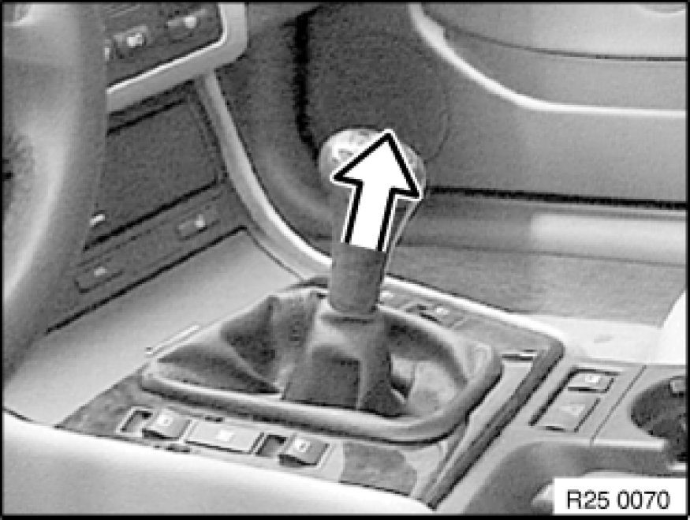

Replacing Knob for Shift Lever
25 11 071 - Replacing knob for shift lever

Note:
Do not twist knob during removal as this would cause the turning lock in the knob to shear off.
Tug firmly to remove knob.
Installation:
Fit knob on selector lever, align and press on until it snaps noticeably into place.
Note:
Illustration shows E46.

Installation:
Push rubber gaiter (1) down until groove (2) is fully exposed.